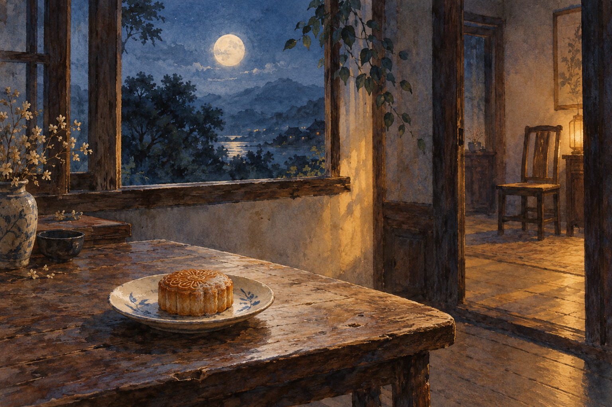

用一门还不熟的语言写短句。Short lines in a language I'm still learning.
英文句子短，逼着我把话说准——和写代码有点像。目前两首。 English sentences are short, which forces precision — not unlike code. Two so far.
 01 / Muir Woods · 2026
01 / Muir Woods · 2026
Rings of Time and Light
Sunlight falls
through a thousand years of leaves,
waving a soft mist in the air.

02 / Mid-Autumn · 2026Mooncake Waiting
The moon was full, but I was not home.
Mid-Autumn came and went
through phone calls
下一首还在写。The next one is still being written.